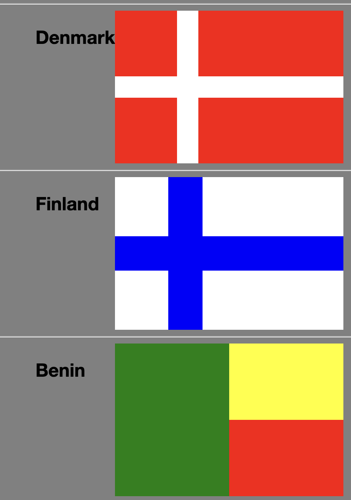
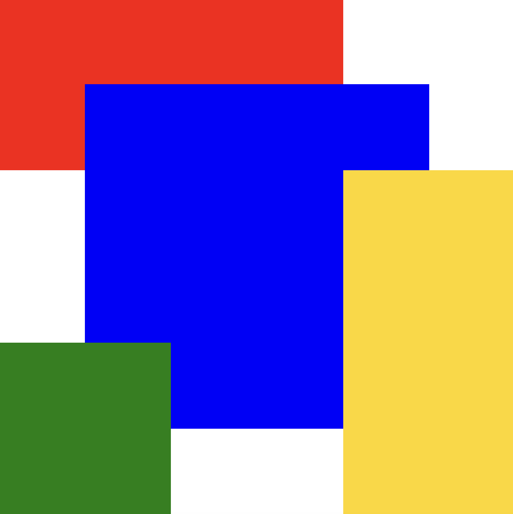
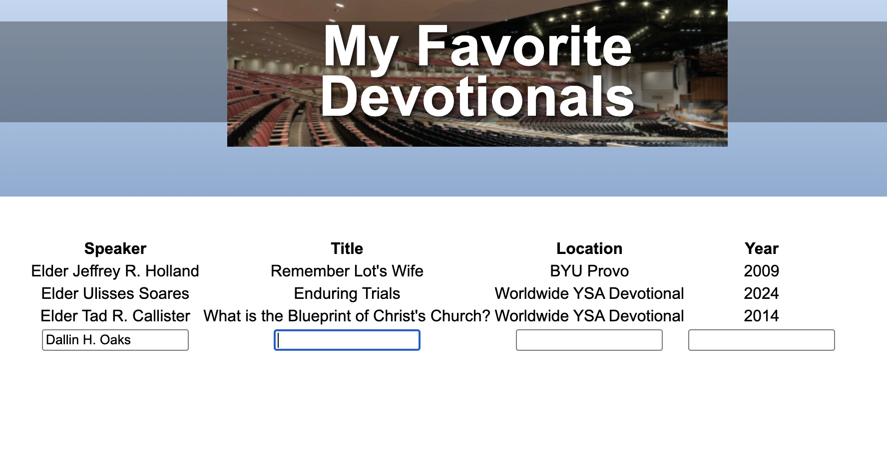
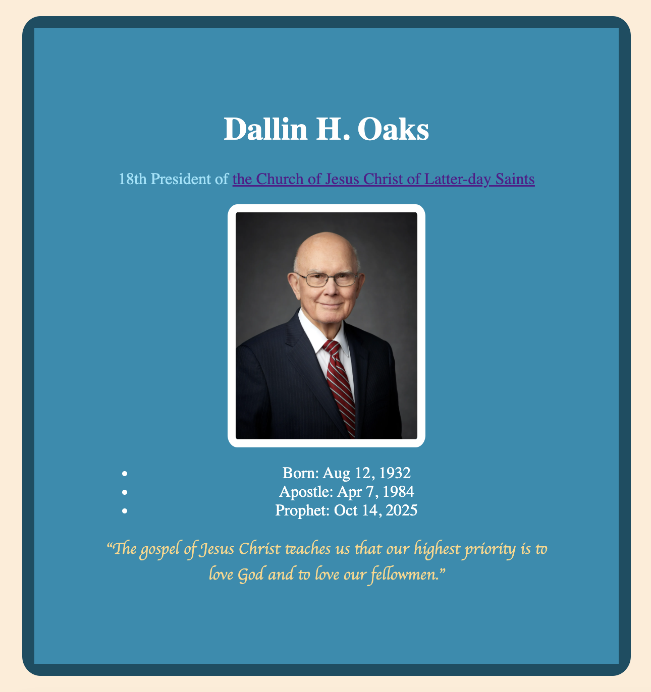

ICE CHALLENGES
All of the ICE Challenges I've done in WDD-130. Click the title of the project in order to navigate to open that page in a new tab.

Grid Flags Page
In this challenge, I made the flags of different countries entirely out of css code and html div tags. This challenge was pretty quick and easy for me which I feel shows how much we've practiced display grid in class. Still, it was a fun little challenge.

Positioning Practice Page
In this challenge, I matched the colored squares with the given images. Most of the activities included the use of a grid. These activities were helpful in my understanding of how to effectively use the display grid in css. One of the activities did not use the display grid and instead used the float element to arrange text around a green square. This was useful because now I understand how and when to use float.

Favorite Devotionals Page
In this challenge, I made a table in html detailing some of my favorite devotionals. Then I added a row where the user can input their favorite devotional. To be honest, the hardest part of the challenge was coming up with 2 more devotionals. I could've put devotionals that I've been to this semester but instead I asked my friends for their favorite devotionals.
Halloween Page
In this challenge, I used css to change the style of the given html. I think I was able to complete this challenge much quicker than the first one because the html was already provided. It was fun to just focus on the css and the style of the page.

Prophet Card Page
The first ICE challenge of the class. In this challenge, I made a little card for the prophet Dallin H. Oaks that briefly introduces him. I struggled with trying to get the positioning to look right. As I completed the assignment, I came to further understand the relation between html and css. I guess before I assumed css would affect the html in a different way but this assignment corrected my understanding.